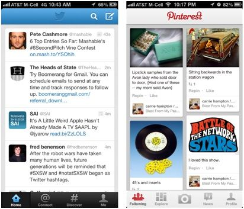

Tip: Memorize Design Best Practices
Wire framing is not easy, especially if it’s not something you do eight hours a day. How does one get inspiration for common design elements?
Full-time designers struggle with this too. One way to get inspiration is to look at competing sites. Another way is to reference a design pattern library. Design patterns are documented solutions to common problems. For instance, there are common user interface solutions for news feeds, listing pages, and navigation menus.

Before your interview, take a moment to review popular design patterns. There’s no need to design news feeds from scratch. It’ll also make for a tricky discussion if you design a news feed that runs against your interviewer’s mental model of what it should look like. Design patterns are available for desktop, web and mobile user interfaces. Search Google for “web design patterns” or “mobile design patterns,” and you’ll find up-to-date resources on common design elements.